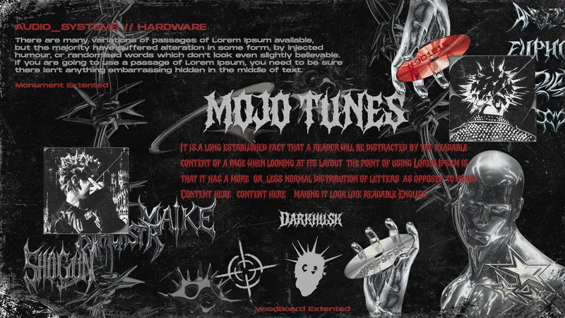
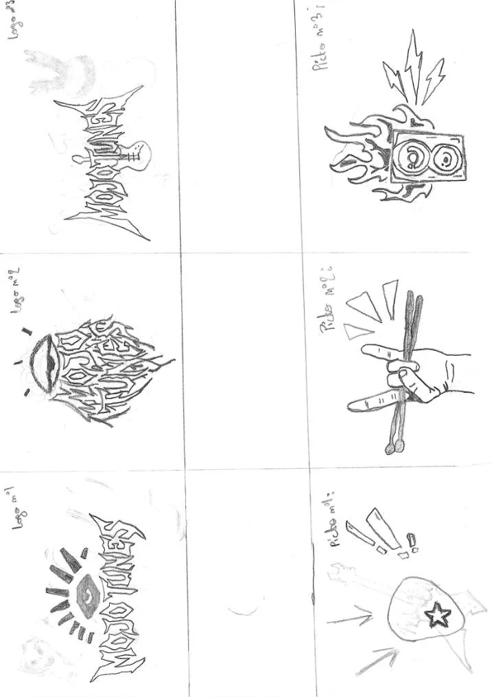

Moderniser l'identite visuelle d'un disquaire local sans trahir ce qui le rend unique.
Dans le cadre de la SAE 1.03 du BUT MMI parcours Creation Numerique (IUT de Troyes), la mission etait de prendre en charge le rebranding complet de Mojo Tunes, un commerce independant bien ancre dans le paysage troyen. Objectif : construire un logo fort et une charte graphique coherente qui modernisent la marque tout en preservant son identite groovy et locale.
Le livrable attendu couvrait l'ensemble du processus creatif : de la recherche d'inspiration jusqu'aux declinaisons finales sur supports reels, en passant par les phases de croquis et de vectorisation.
Le travail a commence par une planche de tendance pour fixer la direction artistique : urbaine, groovy, moderne. Ensuite sont venus les croquis papier pour explorer les formes typographiques, avant d'ouvrir Illustrator pour la vectorisation finale.

Definition de l'univers colorimetrique et stylistique. References visuelles, typos, ambiances.

Exploration papier des formes du logo, des lettres, du rythme visuel avant vectorisation.
Le livret complet de presentation du rebranding : declinaisons du logo, typographie, palette de couleurs, et mockups de mise en situation.
La difficulte principale etait de moderniser sans denaturer. Mojo Tunes a une personnalite : trop "propre" et elle disparait, trop "vintage" et elle stagne. Trouver ce point d'equilibre m'a oblige a iterer beaucoup plus que prevu sur les croquis avant meme d'allumer Illustrator.
Ce projet m'a ancre dans une habitude de travail que j'ai gardee : ne pas ouvrir le logiciel avant d'avoir une direction claire sur papier. La vitesse de vectorisation augmente quand la reflexion a precede l'execution.